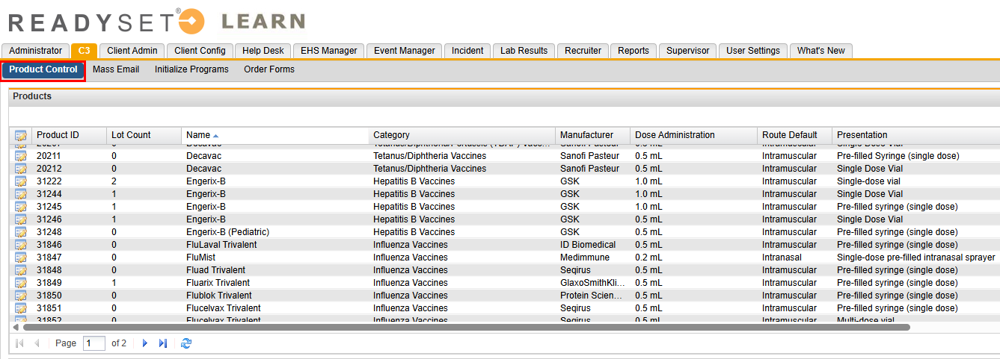
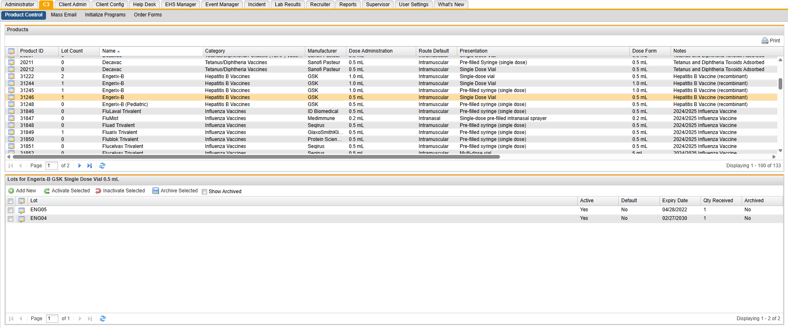
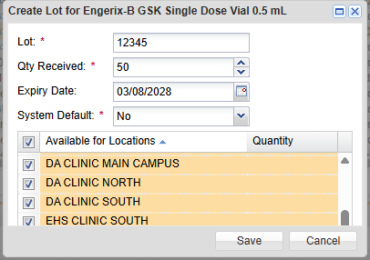
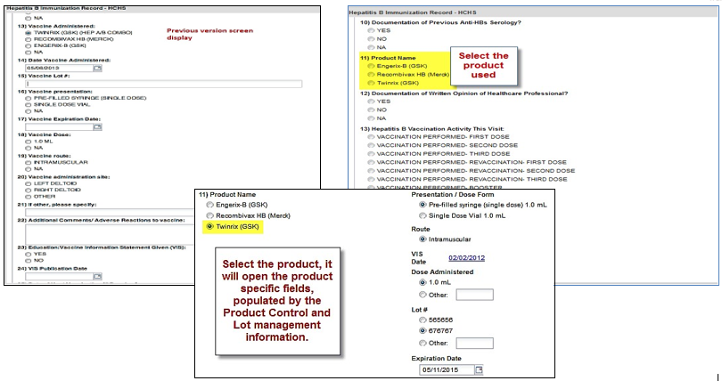
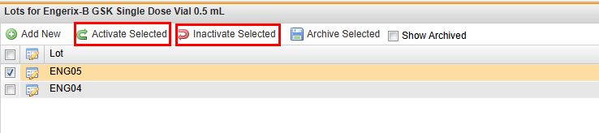

The Product Control feature offers greater control and ease of charting for all vaccines, PPDs and immune globulins. The following protocols and charting forms (if included in your contract) are covered by the new system.
Product Control can be found in the C3 tab and allows you to quickly and easily enter lot numbers, expiration dates, and quantities of any currently available vaccine, PPD, or immune globulin for the above protocols. The list of products available will be maintained by ReadySet, including the package insert dates, administration doses, dose forms, routes, and VIS dates. All you do is pick your product from the list and enter lot numbers, expiration dates, and quantities and the information will automatically populate the corresponding fields in the charting form upon clicking the product name.
Updated and refined charting forms for all the protocols will automatically display all available products, your product lots, expiration dates, VIS dates, routes and more.

| Axion Health Product ID | Name | Category | Manufacturer | Dose Administration |
| Route Default | Presentation | Dose Form | Notes | Instructions |
| Composition | Insert Date | CVX Code | CPT4 Code |

If you have a Lot # entry with error then Archive that Lot # entry and create a new Lot # as described later in this article.
When entering your product information, you can have multiple entries for the same product. For example, you have three lots of Tubersol Sanofi Pasteur Multi-Dose Vial (10 doses) with different lot numbers:
Verify Lot #, Qty. Received and Expiry Date before saving. Once saved you cannot edit. You can change Default at any time.

All drugs/products that are available for that exposure appear in the charting form automatically. This allows the customer to have the full choice of products available.
You can manually enter lot numbers if the lots have not been entered in Product Control.
Refer to the figures below to see previous charting screen display vs new charting screen display using the Product Control feature.

In the current form on the left, the clinician has to fill in everything manually. Manually filling in data presents opportunity for missed data or typing incorrect data.
In the new form on the right, the clinician selects the product and everything is pre-filled. Just select the lot number to have the Expiration Date populate automatically. You can also click on the VIS date and it will open the VIS from the CDC website.
You can inactivate or activate a selected lot. You may choose to inactivate lots that you have entered but are not ready to use and then activate the lot when ready to use.

When the lot has been used, you can archive that lot number. You cannot reactivate an archived Lot.